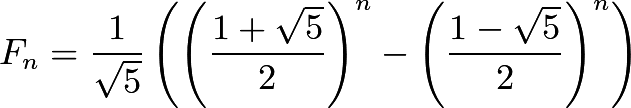

Time Complexity of Recursive Fibonacci
The algorithm (given in C) for the nth fibonacci number is this:
int fibonacci(int n) {
if (n == 1 || n == 2) return 1;
return fibonacci(n - 1) + fibonacci(n - 2);
}It's simple enough, but the runtime complexity isn't entirely obvious. An initial assumption might be that it is O(2n), as it is a recursive formula that branches twice each call, but this isn't the best upper-bound.
The reason for this is that the branch of the recursive call calculating fibonacci(n - 2) will terminate faster than the one calculating fibonacci(n - 1), this fact being compounded on each call, so there's one path that will get to a base case in n / 2 calls, and another getting there in n calls, with all sorts of other paths in between.
The key to getting the proper complexity of fibonacci, then, is to count how many times base cases are reached, as we know that if there are, say, n base cases reached, then there couldn't be more than 2n total functions calls*, and O(2n) = O(n).
Finding the number of base cases reached is actually quite easy; it's fibonacci(n)! fibonacci(n) is equal to the sum of all base cases, as each base case returns 1. Thus, if we find an explicit formula for the nth fibonacci number, we can find the complexity of fibonacci.
Fortunately, an explicit formula has already been derived, courtesy of the brilliant French-British mathematician Abraham de Moivre. He discovered, among many other things, that
Where Fn is the nth fibonacci number.
The first term in Binet's Formula is also known as the golden ratio, typically denoted with the greek letter ϕ.
Thus, the complexity of fibonacci is O(Fn) = O(ϕn). This is approximately O(1.618n). Still awful, but a little better than the initial assumption of O(2n).